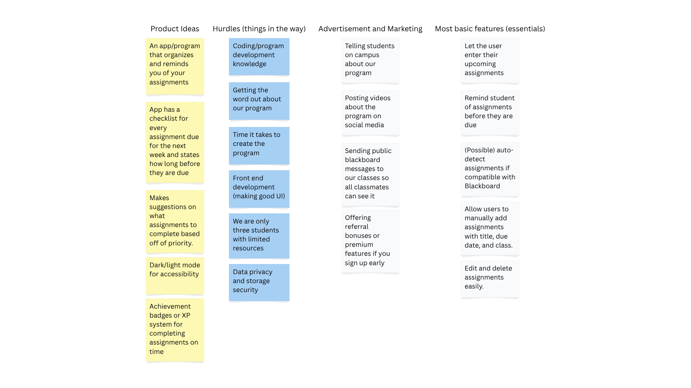
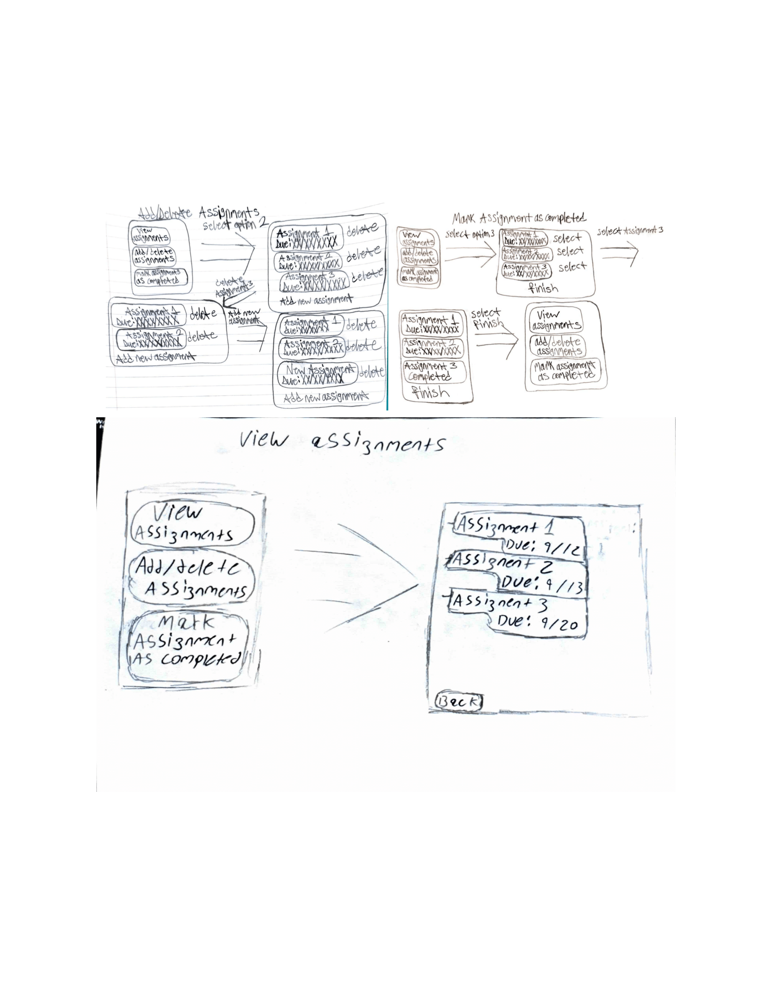

Highlighted projects
Problem Statement

Blackboard often fails to accurately display assignment due dates, which leads to confusion among students and increases the likelihood of missed submissions. This inconsistency makes it difficult for students to plan their schedules effectively and stay organized throughout the semester.
Affinity Diagram

The affinity diagram organizes ideas for an assignment-tracking app into four groups: product ideas, development hurdles, marketing strategies, and essential features. It shows the brainstorming process behind designing an app that helps students manage and stay reminded of upcoming assignments.
Sketches

These sketches show the basic layout and key screens of the assignment-tracking app. The home screen displays a clean list of upcoming assignments, helping students keep track of deadlines at a glance. Navigation options allow users to add new assignments, view course-specific tasks, and mark completed work. Each screen is designed to be simple, organized, and easy to use so students can stay on schedule without confusion.